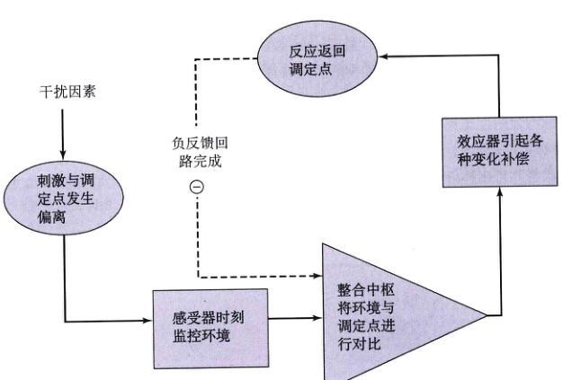
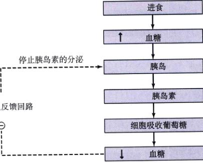
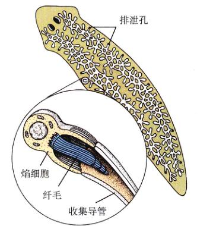
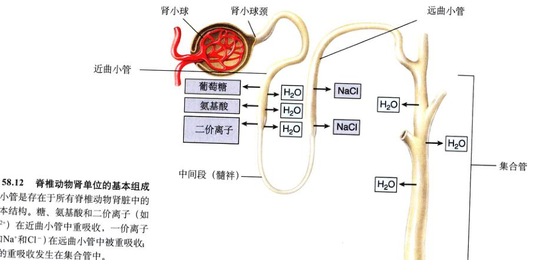
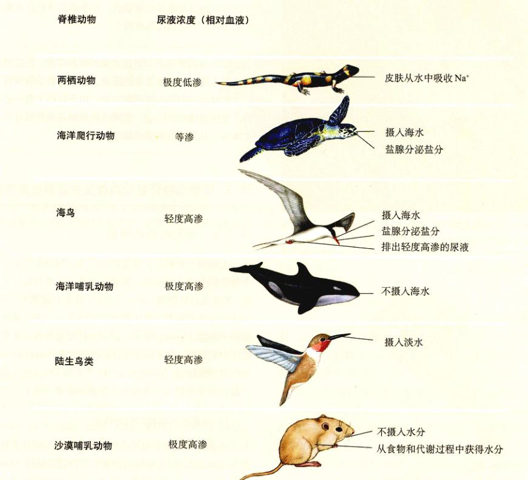
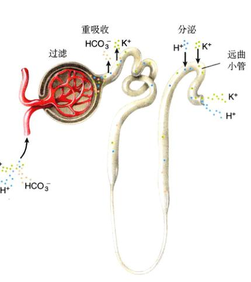
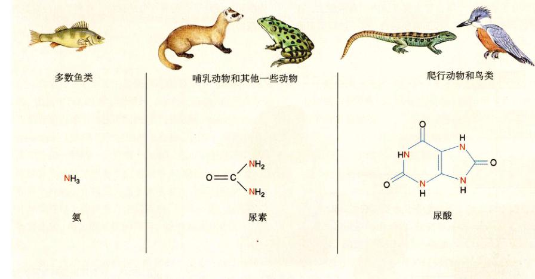
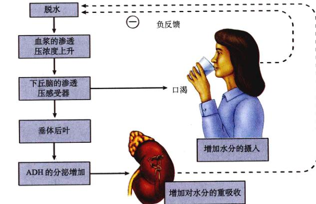

图 58.1 用水来调节体温 大象调节体温的方法之一就是向身上喷水。同样大量的水每天也在大象体内循环，帮助调节它的内环境。
最初的脊椎动物是从海水中进化来的，所以所有脊椎动物的生理特征都反映了这一起源。哺乳动物体内大约三分之二是水。如果体内水含量远低于这一标准，它将会死亡。在这一章里，我们讨论动物避免过量吸收或排出水分的各种机制。我们将看到，这些机制与动物不同的生存环境以及体内的调节系统之间（图 58.1）有着密切的联系。
随着动物的进化，组织的分化更为明显。每个细胞都是一台复杂的机器，在体内很好地发挥着精确的作用。只有在细胞外环境维持在严格的条件下，这些细胞的功能分化才有可能实现，温度、pH、葡萄糖和氧的浓度，以及其他许多因素必须保持相对稳定，细胞才能发挥样功能且进行恰当的相互作用。
稳态 (homeostasis) 是指内环境的动态稳定。它是动态的，因为环境不可能绝对不变，但又总是在很小的范围内发生波动。稳态对生命相当重要，哺乳动物体内与生殖无关的多数调节机制都与稳态相关。
为了维持体内的稳定，脊椎动物体内必须有感受器 (sensor) 来监控体内环境中每一项指标（图 58.2）。它们时刻监测细胞外环境，并将信息传递（通常以神经信号的形式）给包含“调定点” (set point)（每一项指标的标准值）的整合中枢 (integrating center)。这一调定点和房间的恒温器类似。同样，体温、血糖浓度、肌腱张力等都有各自的调定点。整合中枢通常是脑或脊髓的一个特定部位，但在有些情况下也可以是某些内分泌腺的细胞。它从各种感受器收集信号，比较各个感受器传人信号的相对强度，判断环境是否偏离了调定点。如果与调定点发生了偏离（“刺激”），整合中枢就会发出信号，使特定效应器 (effector) 的活动加强或减弱。效应器一般是肌肉和腺体，可以使出现问题的环境向调定点回归（“反应”）。
我们先回到房间的恒温器上来。假设你把恒温器的温度设定在 70°F。如果房间温度高出了调定点，恒温器（等同于整合中枢）收到温度计（感受器）发出的信号，它将这一温度点相比较。如果它们不同的话，整合中枢就会向效应器发出信号。这里的效应器是指空调，在空调调节下，房间的温度会降低到调定点。
在人体内，如果体温超过正常的 37°C，大脑中的感受器就会发现这一变化。通过整合中枢（同样是在大脑中）的作用，这些感受器刺激了效应器（包括汗腺），使体温降低（图 58.3）。我们可以将体内的这一功能想象为使调定点的值不发生偏离。由于效应器的活动受到它所产生效果的影响，而且这一调控是反向的或负的，所以这种控制系统的类型称为负反馈回路 (negative feedback loop)。
我们再用类似的恒温器和空调作类比，负反馈回路的特点就变得很清晰了。当空调开了一段时间后，房间温度可能降到比恒温器的调定点还要低。这时，空调就会停止工作。也就是说，由于高温，效应器（空调）启动，而它产生负面影响（降低了房间温度），最终使得效应器关闭。平衡就是通过这种方法来维持的。
人和其中哺乳类、鸟类一样，是恒温动物，能维持相对稳定的体温，而与环境的温度无关。如果血液温度超过了 37°C (98.6°F)，大脑中的下丘脑神经就会检测到温度的变化。通过控制运动神经，下丘脑促进机体以出...
图 58.2 负反馈回路简图 负反馈回路通过修正与调定点的偏离来维持稳态。
图 58.3 负反馈回路使体温维持在一个正常范围内 大脑可以探测到体温的上升（上图）或下降（下图）。大脑的整合中枢迅速将信息进行处理，并激活效应器，如体表血管、汗腺和骨骼肌。当体温恢复正常时，负反馈即终止了对效应器的刺激。
汗、皮肤血管扩张等机制散发热量，抵消体温的升高。当体温下降时，下丘脑又操纵一系列的不同反应，如颤抖、皮肤血管收缩，使得体温升高，最终达到初始的状态。
除哺乳类和鸟类外，其他脊椎动物属于变温动物，它们的体温或多或少依赖于周围的环境。然而，许多变温动物尽可能地在一定范围内维持体温的稳态。一些鲨鱼类，如金枪鱼、旗鱼和一些鲨鱼，能使体温维持在水温以上。爬行动物通过某些行为来维持体温的恒定——使机体处于阳光下或阴影下（第29章）。这就解释为什么常常可以看见蜥蜴在晒太阳。得病的蜥蜴甚至找一个更暖和的地方，来使自己“发热”。
多数无脊椎动物没有反馈机制来调节体温。相反，它们利用行为来调节。例如：许多蝴蝶在飞行之前必须达到某一特定的体温，在凉爽的清晨，蝴蝶会面向东，尽可能多地吸收太阳光。蛾类和其他一些昆虫利用颤抖反射来温暖它们的飞行胸肌（图 58.4）。
图 58.4 昆虫的体温调节 有些昆虫，如天蛾，会收缩胸肌来热身。
当你消化一顿含糖的食物后，葡萄糖就被吸收进血液里。这会引起短暂的高血糖，但几小时后就会恢复正常。是什么调节了餐后的高血糖呢？
血液中的葡萄糖由一个感受中枢监控，这就是胰腺的胰岛。当血糖升高时，胰岛就会分泌胰岛素，促进肌肉、肝脏和脂肪组织对血糖的吸收。这时，胰岛既是感受器，同时也是整合器。肌肉、肝脏和脂肪组织是效应器，吸收葡萄糖，控制血糖浓度。肌肉和肝脏能将葡萄糖转化为糖原（一种多糖）；脂肪细胞将葡萄糖转化为脂肪。这些反应降低了血糖的浓度（图 58.5），并且在体内储存了能量。
维持稳态的负反馈机制常相互制约，产生更精细的调控。而在一些体内正反馈调节机制的例子中，它们对一些变化起同向作用。
内环境的许多因素受到一些效应器的控制，常常起拮抗作用。拮抗效应器 (antagonistic effector) 的控制有时可以描述为“推拉式”：一个效应器的渐增活动伴随着另外一个效应器的渐减活动。这样一来，两个效应器一增一减，就比一个效应器简单的开关更为有效。
例如，可以通过开关空调或者加热器来维持房间温度。但是，如果更维持更为稳定的室温，最好是在恒温器的控制下，同时运用空调和加热器（图 58.6）。这样，当空调关闭的时候，加热器就会启动，反之亦然。拮抗效应器在控制体温和血糖的过程中，作用与此类似。例如：胰岛素的分泌降低了餐后引起的高血糖，另一激素使得血糖在两餐之间升高，在运动中更是如此。同样，心率也是由拮抗效应控制的。一类神经纤维受到刺激，会提高心率，而另一类受到刺激，心率会降低。
图 58.5 血糖的负反馈控制 饭后血糖浓度的升高会刺激胰岛分泌胰岛素。胰岛素是一种激素，它可以促进骨骼肌和其他组织吸收葡萄糖，降低血糖浓度，抵消最初血糖的升高。
使干扰加强的反馈循环称为正反馈循环。在正反馈循环中，混乱引起效应器产生反应，使其更加偏离调定点。因此，就像点燃炸药的导火线一样，正反馈系统相当不稳定，它对维持稳态没有帮助。不过，在一些生理机理中，这些系统相当重要。比如：在血液凝固的正反馈中，一个促凝因子会迅速引起凝血团的形成。正反馈分娩时的子宫收缩同样起关键作用（图 58.7）。胎儿的伸展引起子宫收缩，而收缩又使胎儿更为伸展；如此循环，直到胎儿离开子宫。在体内，许多正反馈是大范围内维持稳态的一部分：血液凝固防止失血，保持血液总量的不变；胎儿的分娩最终减少了子宫的收缩。
图 58.6 室温由拮抗效应所调控 如果恒温器探测到温度偏低，加热器就会启动，同时空调关闭；如果室温过高，空调就会启动，而加热器关闭。
图 58.7 分娩时的正反馈例子 这是在脊椎动物体内仅有的几个正反馈例子之一。
动物体内的水分布在细胞内外（图 58.8）。为了维持渗透平衡，动物体内的细胞外液（包括血浆）要能够从环境中吸收或排出水分；同样，无机离子也要能在细胞外液和外环境之间发生交换，以维持稳态。多数脊椎动物肾脏的上皮细胞通过过滤作用进行机体和外部环境间水和电解质的交换。
多数脊椎动物的细胞液依靠其中所有的溶质和一些无机离子的浓度保持稳态。钠离子 (Na⁺) 是细胞液中的主要阳离子，氯离子 (Cl⁻) 是主要阴离子。二价阳离子，即钙离子 (Ca²⁺)、镁离子 (Mg²⁺) 及其他一些离子，同样具有重要的作用，必须保持合适的浓度。
渗透作用是指水分子通过扩散透过膜，一般是从稀溶液（溶质浓度低）向浓溶液（溶质浓度高）进行。因为溶质总浓度决定了溶液的通透性，所以，把每千克水中溶解的溶质总摩尔数称为溶液的重量摩尔渗透压浓度 (osmolality)。具有相同渗透压浓度的溶液是等渗的 (isosmotic) 溶液。具有较低或较高渗透压浓度的溶液叫做低渗 (hypoosmotic) 或高渗 (hyperosmotic) 溶液。
如果一种溶液相对另一中是高渗的，并且这两种溶液由半透膜分隔，那么由于渗透作用，水分子会从低渗溶液进入高渗溶液。这样的话，高渗溶液同时也具有较高的渗透压 (osmotic pressure)。溶液的渗透压是经过渗透作用而产生吸水趋势的量度。将细胞放入与细胞质相比有更高渗透压 (osmotic pressure) 的高渗溶液中，细胞将会失水萎缩；相反，处于低渗溶液中的细胞，会吸水膨胀。
如果细胞处于等渗溶液中，在细胞和溶液间将不会有水的净流动。这样一来，等渗溶液同样也是等压的 (isotonic)。医学上通常常用等压液（如生理盐水和 5% 葡萄糖溶液）来清洗表面组织和进行静脉注射。
图 58.8 机体细胞内液和细胞外液与外部环境之间的相互作用 水分可以从环境中获得，也可以由体内散失出去。细胞外液与环境间的水和溶质的交换可以通过上皮细胞的运输来完成，肾脏也可以将血液中的水和溶质滤出。总之，要维持稳态，进人和排出机体的水和溶质必须保持平衡。
多数海洋无脊椎动物都是等渗体 (osmoconformer)，它们体液的渗透压浓度与海水一样（虽然有些溶质的浓度并不相同，如镁离子）。由于细胞液和海水等渗，它们和海水之间没有渗透梯度和压力，水不会流进或流出生物体内。这样一来，等渗体和它处的环境渗透平衡。在脊椎动物中，只有原始的八目鳗鱼 (chondrichthyes) 是严格的等渗体。鲨鱼及其同类软骨鱼同样和海水等渗，尽管它们血液中的 NaCl 含量比海水的要低。渗透压浓度的不同是由血浆中高浓度的尿素造成的。
其他所有脊椎动物都是渗透调节体 (osmoregulator)——不管周围环境浓度如何，动物体内的体液渗透压浓度总是维持在相对恒定范围。相对稳定的体液渗透压浓度，使得脊椎动物能在更广阔的生态环境中生存。而要达到这一稳定，则需要连续不断地调节。
淡水脊椎动物体内的溶质浓度比周围水中的要高很多。也就是说，它们比周围的环境要高渗。由于它们较高的渗透压，环境中的水会有进入生物体内的趋势。结果它们必须尽可能地防止外界水分的进入，并且除去已经进入体内的水分。除此以外，它们体内有机离子还有流失的可能，因此必须利用主动运输将这些离子重新运回体内。
相反，大多数海洋脊椎动物相对于其环境是低渗的；它们体液的渗透压浓度仅仅为周围海水的三分之一。这些动物会有失水的危险，因此它们必须防止体内水分的流失。为此，它们摄入海水，并由肾脏和鳃排出的多余的离子。
陆生脊椎动物体液中的水的浓度比周围空气的要高。这样，皮肤和肺的蒸发作用会使它们体内的水分散失到空气中去。所有的爬行类、鸟类、哺乳类以及在陆上生活的两栖类，都面临这些问题。这些动物已经进化出了排泄系统，以帮助它们保持体内的水分。
动物进化出了许多机制来解决水平衡问题。在许多动物中，体内水分和无机盐通常是作为代谢废物而由排泄系统排出的。为达到同样的目的，原生生物利用伸缩泡，海绵也是如此。其他多细胞动物则通过一系列排泄管道（小管）将废物排出体外。
扁形动物的排泄管称做原肾管 (protonephridium)，它在体内形成许多分支，末端为球状的焰细胞 (flame cell)（图 58.9）。这些简单的排泄结构都开口于体外，在体内没有开口。当然，焰细胞的纤毛吸收体内的液体。最后，水和其他代谢产物经重吸收作用，经排泄孔排出体外。
其他无脊椎动物的排泄管在体内和体外都有开口。蚯蚓的排泄器官是肾管 (nephridium)（即后肾管，译者注）（图 58.10中的蓝色结构）。肾管通过漏斗状的肾口 (nephrostome) 经过过滤作用从体腔内获得液体。“过滤”是指液体在压力作用下通过小孔的过程。因此，直径大于孔径的分子就不能通过。由于过滤得到的液体和体腔内的液体是等渗的，但是它通过肾管时，通过主动运输作用除去了其中的 NaCl。重吸收作用是指将导管内的物质重新运回周围的体液中。由于盐通过主动运输被重吸收了，排出的尿液要比体液稀（低渗）。软体动物的肾管和甲壳类的排泄器官（又称“排泄腺” (antennal gland)）同样经过过滤作用排出尿液，并经过重吸收作用回收了一些离子。
昆虫的排泄器官是马氏管 (Malpighian tubule)（图 58.11），是后肠以前的消化腔管壁向外突出形成的盲管。因为体腔血液和细管之间没有压力差，所以在这些细管内，尿液不是由过滤作用形成的。废物分子和钾
图 58.9 扁形动物的原肾管 管状的分支系统，球状的焰细胞和排泄孔组成了扁形虫的原肾管。焰细胞内的纤毛通过摆动吸收体内的液体，代谢产物通过开口向外的排泄孔排出体外。
图 58.10 环节动物的肾管 多数无脊椎动物，如这里的环节动物，都有肾管。它由收集体液滤出液的导管组成，滤出液随后进入漏斗状的肾口。导管中的盐类可以被重吸收，剩余的液体即为尿，由排尿孔排出体外。
离子 (K⁺) 是经主动运输进入到细管内的。分泌作用恰好和重吸收作用相反——体液里的离子和分子被运输进细管。K⁺ 的分泌作用建立了一个浓度梯度，使得开放体循环系统中的水分子渗透进细管。多数水分子和 K⁺ 经后肠的上皮细胞重吸收进入循环系统，只剩下小分子，废物与粪便经直肠排出体外。马氏管提供了一种有效的保水方法。
与昆虫的马氏管不同，脊椎动物的肾脏可以使血液在压力作用下过滤产生滤液。除了有用的有机分子外，滤液中还有许多对动物至关重要的小分子，包括葡萄糖、氨基酸和维生素。这些物质和大部分的水都经过重吸收作用返回血液，而废物始终在滤出液中。其他的由肾小管分泌的代谢废物，添加到滤出液中，形成最终的排泄物——尿液，再被排出体外。
脊椎动物的肾脏可以从丛血液中滤过几乎任何物质（除蛋白质外，它的分子太大），然后又耗费能量将机体所需的一些物质重新吸收，这看假很奇怪。但是不同的脊椎动物进化出了重吸收不同分子的能力，这些分子对于它们在特殊生境的生存至关重要。因此选择性重吸收作用为动物提供了很强的适应性。这也正是哺乳动物能够成功地适应各种类型生存环境的关键因素。
肾脏是一个复杂的器官，由成千上万个肾单位 (nephron) 构成，每个肾单位都由弯曲的小管构成（图 58.12）。血压迫使血液中的液体通过肾单位顶端的肾小球 (glomerulus) 而过滤。肾小球保留了血液中的血细胞、蛋白质和其他一些有用的大分子，只允许水分子、一些小分子和废物通过，进入了肾单位的弯曲管腔。当滤出液通过肾小管时，有用的糖类和离子经主动运输被吸收，留下水分子和代谢废物形成尿液。
虽然所有脊椎动物的肾脏基本构造都相同，但是它们之间还是有一些不同。由于最初肾小球滤出液与血液等渗，因而所有脊椎动物都可以通过对水分子和离子的重吸收，产生与血液等渗（对水分子和离子的重吸收比例相同）或低渗（比血液稀，水分子的重吸收相对较少）的尿液。只有鸟类和哺乳类能够从肾小球滤出液中重吸收足够多的水分，产生比血液高渗的尿液。
人们认为肾脏的进化始于淡水硬骨鱼。由于淡水鱼的体液比周围的环境要有更高的渗透浓度，所以这些鱼面临两个严重的问题：①环境中的水会进入人体内；②体液中的溶质会离开身体进入环境。淡水鱼不摄入水分，并且排出很多稀释的尿液（比体液低渗），这就解决了第一个问题。第二个问题的解决，是通过肾小管的重吸收作用，使得小球滤出液中的离子重新回到血液中去。此外，它还将鳃表面水中的离子主动运输到血液中。
图 58.11 昆虫的马氏管 (a) 昆虫的马氏管是消化管的延伸物，收集体循环中的水和废物。(b) K⁺ 被分泌到这些管道中，利用渗透作用吸吸收水分。其中许多水分（见箭头）被重吸收进入后肠。
图 58.12 脊椎动物肾单位的基本组成 肾小管是存在于所有脊椎动物肾脏中的基本结构。糖、氨基酸和二价离子（如 Ca²⁺）在近曲小管中重吸收。一价离子（如 Na⁺ 和 Cl⁻）在远曲小管中被重吸收；水的重吸收发生在集合管中。
图 58.13 淡水鱼和海洋硬骨鱼面临不同的渗透问题 淡水硬骨鱼对于它所处的环境来说是高渗的，而海洋硬骨鱼对于海水则是低渗的。为了弥补吸收水分和丢失离子的趋势，淡水鱼产生很稀的尿液，同时避免水分的摄入，并利用肾小管对离子进行重吸收。反之，为了弥补水渗透压浓度的丧失，海洋硬骨鱼摄入海水，并通过鳃部和肾脏的主动运输排出多余的离子。
虽然大多数动物起源于海洋，但是硬骨鱼很有可能是从淡水中演化过来的，这一点我们在第48章已经提到过。由于它们的体液比周围的海水低渗，它们又面临了新的困维。结果，它们体内的水通过渗透作用经过鳃而流失到海水中，同时，尿液也使它们流失水分。为了补偿这持续的失失，它们摄入大量的海水（图 58.13）。海水鱼摄入海水中的许多二价阳离子（主要是 Ca²⁺ 和 Mg²⁺），残留在消化管道内，最后由肛门排出体外。而其中一些被吸收进血液中，就像单价离子（K⁺、Na⁺ 和 Cl⁻）一样。多数单价离子经过主动运输从鳃表面离开血液，而进入血液中的二价离子被分泌到肾小管中，以尿的形式排出体外。通过上述两种方式，海洋硬骨鱼类将从海水中摄取的离子排出体外。它们排出的尿液和它们的体液等渗，其浓度比淡水鱼的尿液要高，而低于鸟类和哺乳类。
软骨鱼类，包括鲨鱼和鳐是软骨鱼中最普遍的两个亚纲。软骨鱼用了和硬骨鱼不同的方法解决海水的渗透
问题。硬骨鱼通过不断地摄取海水，再主动排出离子的方法来保持体液的低渗，而软骨鱼与此不同，它们对肾小管中的尿素重新吸收，以保持血液中尿素的浓度比哺乳动物高 100 倍。这些增加的尿素使得它们的血液几乎和周围的海水等渗。由于在等渗溶液之间不发生净水量的变化，机体的失水由此可以避免。因此，这些鱼不用摄入海水来维持渗透平衡，并且它们的肾脏和鳃也不用排出大量的离子。软骨鱼的酶和组织已经进化得可以耐受这种高浓度的尿素。
两栖类是最早的陆生脊椎动物。它们的肾脏与淡水鱼的相同，这丝毫不奇怪，因为这两栖类在淡水中度过相当长的时间，并且当它们登陆时，它们也会呆在潮湿的地方。两栖类的尿液非常稀，它们将周围水中的 Na⁺ 主动运输进机体内，来补偿 Na⁺ 的损失。
另一方面，爬行类的栖息环境多种多样。那些主要生活在淡水中的爬行类与淡水鱼和两栖类的生境相似，因此它们具有类似的肾脏。海水爬行动物，包括一些鳄鱼、海龟、海蛇和一种蜥蜴，它们的肾脏和它们的淡水亲戚相似，但面临着一个相反的问题：它们会失水并吸收盐分。像海洋硬骨鱼类一样，它们摄入海水，排出等渗的尿液。海洋硬骨鱼通过鳃排出体内过多的盐分，而海水爬行类则通过鼻子或眼睛附近的盐腺排盐（图 58.14）。
图 58.14 一些脊椎动物的渗透调节 只有鸟类和哺乳动物可以有效地保持体内的水分，产生高渗的尿液，但是海洋爬行动物和鸟类能够摄入海水，并通过盐腺排除多余的盐分排出。
陆生爬行动物的肾脏同样对肾小管中的水分和盐进行重吸收，在干燥环境中，这对血液总量的恒定或多或少有所帮助。与鱼类和两栖类一样，它们的尿液浓度总是低于血浆浓度。可是，当它们的尿液进入泄殖腔（消化管和尿液的共同通道）后，多余的水分可以被重新吸收。
只有哺乳类和鸟类可以产生比体液高渗的尿液。也就是说，只需要少量的水分就可以排出体内的废物，这就可以将水分维持在体内。在水资源缺乏的条件下，例如：骆驼、沙鼠、小囊鼠 (Perognathus) 尿液的浓度是各自血液的 8 倍、14 倍和 22 倍。更格卢鼠（图 58.15）的肾脏更为高效，以至于它们从来不饮用水，仅靠食物中的水分和细胞有氧呼吸产生的水分就足以满足它的生存需要。
高渗尿液由肾的髓样部分形成（图 58.18），它只存在于哺乳类和鸟类体内。肾单位长长的髓袢向髓质中延伸很深，那里高渗的环境使水分大量渗出，产生高浓度的尿液。多数哺乳动物的一些肾小体的髓袢很短，而其他则很长（图 58.17）。相比之下，鸟类肾小体中长的髓袢很少或者几乎没有，因此它们的尿液就没有哺乳类那么浓。它们最能够产生比血液浓度高 1 倍的尿液。海鸟对付失水的方法是摄入海水，再由眼睛附近的盐腺将盐分排出（图 58.16）。
鸟类适度高渗的尿液被运输到泄殖腔，同样在那里的还有消化管道产生的排泄物。如果有需要的话，多余的水分可以透过泄殖腔而被吸收，产生半固体的白色糊状物或小球，最后被排出体外。
图 58.15 巴拿明更格卢鼠 (Dipodomys panamintensis) 这种哺乳动物的肾脏功能非常强，它可以通过重吸收水分，将尿液浓缩，从而使体内水分散失最少。这一特性对于生存于干燥沙漠地区的袋鼠至关重要。
图 58.16 海鸟摄入海水，随后由盐腺将盐分排出 这些腺体排出的盐度极高的液体顺着喙滴下。
人的两个肾脏位于体腔的后下方，有拳头大小。每个肾脏都由肾动脉供血，尿液也就是由这些血液所形成的。尿液通过输尿管 (ureter) 排出，输送到膀胱 (urinary bladder)。在肾脏里，输尿管开口形成了一个漏斗状的结构——肾盂 (renal pelvis)，其中的杯状延伸物收集肾脏组织中的尿液。肾又被分为外部的肾皮质 (renal cortex) 和内部的肾髓质 (renal medulla)（图 58.17）。这些结构一起合作完成过滤、重吸收、分泌和排泄作用。
在显微层次上，每一个肾脏包含大约 100 万个肾单位 (nephron)。哺乳动物的肾脏中有近髓肾单位 (juxtamedullary nephron)，它在髓质中有很长的环状管道，还有皮质肾单位 (cortical nephron)，它在髓质中的管道相对较短（图 58.17）。这些环状管道的长度有重要意义，稍后向大家解释。
图 58.17 女性的泌尿系统 (a) 泌尿系统器官的位置。(b) 肾脏的切面，显示了肾的内部结构。(c) 哺乳动物肾脏中肾单位的位置。皮质肾单位主要位于肾脏的皮质中，近髓肾单位有很长的回路，深入髓质中。
每一个肾单位都由一个很长的细管组成，并且和毛细血管有一定关系。首先，血液由许多入球小动脉 (afferent arteriole) 运送到皮质中的一团毛细血管——肾小球 (glomerulus)（图 58.18）。在这里，由于压力作用，血液被过滤，滤出液通过多孔渗水的毛细血管壁。血细胞和血浆蛋白由于体积较大，无法通过肾小球过滤（glomerular filtrate），但是大量的水和溶于水的分子离开血液循环。滤出液随后进入肾小管。这一段肾小管又称肾小囊 (Bowman's capsule)，包裹在肾小球的周围。打个比方，在你把拳头塞进气球时，巨大而柔软的气球将会将你的拳头紧紧包住，这种情形与肾小球囊一样。肾小囊的另一端开口于肾小管，肾小球滤出液随即进入肾小管系统。
滤出液进入到肾小球囊后，进入了皮质中的近曲小管 (proximal convoluted tubule)，接着进入髓质，随后又回到皮质中的髓袢 (loop of Henle)。只有哺乳类和鸟类的肾脏有髓袢，所以只有它们才可以产生高浓度的尿液。离开环状管道以后，液体被输送到皮质中的远曲小管 (distal convoluted tubule)，之后进入集合管 (collecting duct)。集合管在皮质中向下延伸，汇合，使得尿液在肾盂中形成。
血液中没有滤出的成分由出球小动脉 (efferent arteriole) 输出，它再形成毛细血管网，叫管周毛细血管 (peritubular capillary)，包在肾小管外。机体内只有这里有两个连续的毛细血管网。随后我们会介绍管周毛细血管在重吸收和分泌过程中发挥的作用。
图 58.18 哺乳动物的肾单位 肾小管被管周毛细血管包围，这些血管将滤出液中被重吸收的分子和离子运轴走。
图 58.19 肾脏的 4 个功能 肾小球的过滤作用和肾周毛细血管的分泌作用使分子进入尿液。滤出液中的分子可以通过肾小管的重吸收作用返回管周毛细血管中，或者通过机体排泄作用经肾小管、输尿管、膀胱排出体外。
肾小球滤出液中的大多数水以及水中溶解的溶质要回到血液循环中（图 58.19），否则动物将会死亡。例如：人每天有将近 2000 L 的血液流经肾脏，其中有 180 L 离开血液，进入肾小球滤出液。由于人体的总血量只有大约 5 L，每天只产生 1~2 L 的尿液，因此显然每天血液都要经过多次过滤，而且滤出液也经过多次重吸收。稍后我们会介绍水分的重吸收是盐类重吸收作用的必然结果。
葡萄糖、氨基酸和其他许多身体必需的分子通过主动运输的载体而被重新吸收。由于在所有载体的运输过程中，如果载体数量饱和，则运输过程达到最大速率（第6章）。对于肾脏中的葡萄糖载体，血液中的（同样也是滤出液中的）葡萄糖浓度大约是每 100 mL 血液中有 180 mg。如果血糖浓度超过这个值，多余的葡萄糖就会由尿液排出。这样的话，如果尿液中含有葡萄糖，就表明机体患有糖尿病。
外源分子和体内特殊废物的分泌作用是与这些分子穿过毛细血管壁和肾小管进入滤出液相关的。这个过程和重吸收类似，但是方向相反。这样的活，有些分泌的分子可以很快进入尿液，所以仅通过肾脏就可以将它们从血液中完全除去。这就解释为什么有些药物必须每天大剂量、多次使用，原因是肾单位将它分泌至尿液。
肾脏的一个主要功能就是排出机体各种潜在的有害物质。另外，尿液中还含有氮气质废物，如尿素和尿酸，它们是氨基酸和核酸分解作用的产物。尿液中同样有多余的 K⁺、H⁺ 及血液中的其他离子。尿液中高浓度的 H⁺（pH 值 5~7），可以维持血液中的酸-碱平衡，使血液的酸碱度保持在有限的范围内 (pH 值 7.35~7.45)。另外，水分随尿液排出有利于维持血液总量和血压。尿液越多，血液总量越少。
因此，肾脏的最终功能是维持稳态。它对于维持内环境的稳定有重要作用。如果有疾病影响到肾脏的功能的话，它会引起血液中含氮废物浓度升高，电解质平衡和酸碱平衡遭破坏，血压失控。这些致命因素更加突出了肾脏在正常生理活动中的重要性。
前面已经介绍，每天有大约 180 L (在人体中) 等渗的肾小球滤出液进入肾小囊。在通过其余肾小管后，如果不经过重吸收作用，那么这些液体都将作为尿液排出体外。显然机体不可能产生如此多的尿液。可是在这个过程中，水分只能经渗透作用通过细胞膜，而在两个等渗溶液中不可能发生渗透。因此一定有某些机制在肾小球滤出液和血液之间建立渗透梯度，使重吸收作用能够发生。
进入肾小囊的滤出液中，大约 2/3 的 NaCl 和水很快进入近曲小管的管壁重新吸收。滤出液中的 Na⁺ 是被主动运输由周围的近曲小管。由于静电作用，Cl⁻ 随着一起发生移动，并且由此产生了渗透作用，水分子也跟它们一起移动。这样，NaCl 和水分子在滤出液中成比例地减少，所以管中滤出液仍然保持和血浆等渗。
虽然肾小管中的滤出液经过重吸收 NaCl 和水，只有 1/3 保留了下来，但是体积仍非常大（每人每天产生大约 60 L 滤出液）。显然，没有动物会排出如此多的尿液，因此其中的大部分水分肯定会被再次吸收。由于髓质的间隙液是高渗的，所以水分被髓质中的集合管壁初次吸收。接下来高渗的髓质又通过渗透作用将集合管中的水分再次吸收，最后留下高渗的尿液。
肾小管重吸收大量水分是依靠高渗的髓质，髓质越高渗，渗透梯度就越高，水就会更多地离开集合管。其中正是髓袢的作用，才得到高渗的髓质，其作用如下（图 58.20）。
(1) 髓袢的升支，主动排出 Na⁺，Cl⁻ 也随着一起排出。这里 NaCl 的排出机制不同于近曲小管，其中最重要的不同点在于，水分子不能透过升支。由于 Na⁺ 的减少，升支中的液体进入皮质后逐渐变稀（低渗），而周围的组织中逐渐变成高浓度（高渗）。
(2) 由升支泵出的 NaCl 滞留在周围的组织液。这是因为皮质中的管周毛细血管有许多环，特称为直小血管 (vasa recta)，使得 NaCl 从离开髓质的血液中扩散到进入髓质的血液中去。这样，直小血管起到了反向交换的作用，这和鱼鳃中血液和水流向的反向交换作用类似（参看第53章）。这样，髓质中血管间 NaCl 的扩散使得许多 NaCl 保持在组织液中，以维持组织液的高渗。
(3) 水分子可以通过降支的管壁，因此在滤液流
图 58.20 哺乳动物肾脏对盐和水的重吸收作用 Na⁺ 被主动运出近曲小管，随后 Cl⁻ 和水被动运出。髓袢升支中 NaCl 的主动排出，建立了一个渗透梯度，使得集合管实现了水分的重吸收。由皮质到髓质的渗透度变化如图所示。
降支时，水分子由于渗透作用进入高渗的髓质中。这些进入直小血管的水分，经血液循环带走。
(4) 降支中水分的流失，升支主动排出 NaCl，使浓度变得更高。髓袢越长，升支和降支作用的区域域就越长，所产生的总浓度就越高。在人肾脏中，进入髓袢的滤出液浓度是 300 mM，而在最长的髓底部髓质中，其浓度超过 1200 mM。
由于髓袢的升支和降支中液体的流动方向相反，髓袢产生高渗髓质的作用称为逆流倍增系统 (countercurrent multiplier system)，引起 NaCl 的积累，造成髓质中溶质的高浓度，但是尿素同样对髓质的总渗透度有贡献。这是因为尿素可透过降支和集合管，从而扩散离升肾单位。
因为 NaCl 从髓袢的升支中被泵出，所以到达皮质中远曲小管和集合管中的滤出液是低渗的（浓度仅仅为 100 mOsm）。集合管将这些稀溶液运送到髓质。髓质中有高渗的组织液，由于有很高的渗透梯度，集合管中的水分很容易就进入到周围的血管中。
这个渗透梯度一般情况下保持不变，但是集合管中水的透过性还受到抗利尿激素 (antidiuretic hormone, ADH) 的调控，这已经在第52章和第56章介绍过了。在机体需要保存水分时，垂体后叶会分泌更多的 ADH，增加了集合管细胞膜上水分子通道，使得更多的水分被吸收，结果尿液的水含量变得更小，最终产生高渗的尿液。
除了水平衡外，肾脏还通过重吸收和分泌作用控制血液中的电解质平衡。例如，K⁺ 先是在近曲小管中被重吸收，随后又在远曲小管中被分泌，以维持稳态（图 58.21）。同样，肾脏还在尿中排出 H⁺，重吸收碳酸氢根 (HCO₃⁻)，维持酸碱平衡。
氨基酸和核酸是含氮分子。当机体分解这些分子作为能量，或者是将其转化为糖类和脂类时，它们产生的含氮的副产品叫做含氮废物 (nitrogenous waste)（图 58.22），它们必须被排出体外。
氨基酸和核酸代谢的第一步是脱氨基 (-NH₂)，以及与 H⁺ 化合而产生氨 (ammonia) (NH₃)，这一过程由肝
脏完成。氨对细胞毒性很大，只有在很低的浓度时才比较安全。氨的排出对于硬骨鱼和蝌蚪来说问题不大，它们的鳃部将大部分氨排出体外，还有一小部分通过稀释的尿液排出。软骨鱼、成年的两栖类和哺乳类体内的含氮废物是以毒性不太大的尿素 (urea) 的形式排出的。尿素可以溶于水，因此在尿液中可以大量存在。它在肝脏中合成，并由血管输送到肾脏，最后排出体外。
爬行类、鸟类和昆虫排出的含氮废物是尿酸 (uric acid)。尿酸在水中的溶解度不大，因此发生沉淀，只需少量的水就可将其排出。在鸟体内，尿酸形成白色黏稠的鸟粪。这些动物合成尿酸的本领对它们各自都很重要，由于它们的卵由卵壳所包围，所以胚胎在卵中发育时，所产生的含氮废物就堆积在壳内。尿酸的形成是一个漫长的过程，需要大量的能量，最后产生的化合物结晶并沉淀。虽然尿酸就在卵内，但由于是固体沉淀，就无法影响胚胎的发育。
哺乳类同样可以产生一些尿酸，它是通过降解嘌呤核苷（参看第3章）产生的，而与氨基酸无关。多数哺乳动物体内都有一种尿酸酶 (uricase)，它可以将尿酸转变为一种易溶的衍生物，叫做尿囊素 (allantoin)。只有人、猿类和达尔马提亚斑狗缺少这种酶，所以以尿酸的形式排出。人体关节处过多的尿酸积累会引起痛风 (gout)。
图 58.21 肾单位控制尿液中 K⁺、H⁺ 和 HCO₃⁻ 的含量 在近曲小管中，K⁺ 被完全重吸收，并在远曲小管中以不同的量被分泌。HCO₃⁻ 滤出后，在正常情况下被完全重吸收。H⁺ 滤出后，同样也在远曲小管中被分泌，因此终尿的 pH 呈酸性。
图 58.22 含氮废物 在氨基酸和核酸代谢中，直接的副产物是毒性很大的氨，它可以被硬骨鱼从鳃部直接排出。哺乳动物则将氨转化为毒性较小的尿素。鸟类和陆生脊椎动物将氨转化为不溶于水的尿酸。
在哺乳类和鸟类中，尿液中水分的含量以及尿液的浓度都随机体需要而改变。通过下述机制的作用：在机体需要储存水分时，肾脏会排出高渗的尿液；如果机体摄入了过多的水分，那么肾脏排出的尿液就是低渗的。这样一来，无论你喝多少水，肾脏总可以维持总血量、血压、血浆的相对稳定。肾脏同样还控制血浆中 K⁺ 和 Na⁺ 的浓度，并且将血液的 pH 值维持在很窄的范围内。肾脏的这些稳态功能主要由激素（参看第56章）调控。
抗利尿激素 (ADH) 是下丘脑产生的，并由垂体后叶分泌。ADH 的分泌主要是由于身体脱水或吃了咸的食物使血浆的渗透压升高所引起的。由于血浆的渗透压浓度升高，下丘脑的渗透压感受器兴奋向整合中枢（同样位于下丘脑）发出信号。这样，引起口渴的反应，并增加了 ADH 的分泌（图 58.23）。
ADH 使肾脏的集合管对水分子的通透性升高，这是因为水分子的通道位于集合管上皮细胞内的囊泡膜上，在 ADH 的刺激下，囊泡膜和细胞膜融合，这一过程类似胞吐作用。当 ADH 的分泌减少时，细胞膜又会萎缩，在细胞内形成新的有水分子通道囊泡，因此细胞膜对水分子的通透能力就会下降。
由于髓质中的细胞外液比集合管中的滤出液高渗，滤出液中的水分由于渗透作用进入血液。当 ADH 分泌最大量时，一个人一天只排出 600 mL 高浓度的尿液。而尿崩症 (diabetes insipidus) 患者由于垂体受损，体内缺少 ADH，不断排出大量的稀释尿液。这类患者会由于严重失水或低血压而死。
钠离子是血浆中的主要溶质。当血液中的 Na⁺ 浓度下降时，血液的渗透压浓度也会降低。渗透压浓度的降低抑制了 ADH 的分泌，使得更多的水分停留在集合管中，形成尿液，结果，血液总量和血压会相应降低。细胞外 Na⁺ 的减少同样会使过多的水分子渗透进入细胞，部分抵消了血浆渗透压的降低，但是更加降低了血液总量和血压。如果 Na⁺ 严重不足，血液总量降得更低，使血压不足以维持生命。因为这个原因，盐对于生命相当重要。许多动物会由于“盐渴”，主动寻找盐分，比如舐盐的鹿。
血液中 Na⁺ 浓度的下降一般会因醛固酮对肾的影响而抵消。醛固酮 (aldosterone) 由肾上腺皮质分泌，它促进远曲小管对 Na⁺ 的重吸收，降低尿液中 Na⁺ 的含量。当然，如果醛固酮的分泌量最大时，尿液中可以从尿液中完全消失。对 Na⁺ 的吸收伴随着 Cl⁻ 和水分的吸收，因此醛固酮同时促进了盐类和水分的保持，有利于血液总量和血压的维持。
图 58.23 抗利尿激素刺激肾脏对水分的重吸收作用 这一过程是一个负反馈回路，维持体内血量和渗透压浓度的稳态。
图 58.24 血液总量的下降会激活肾素-血管紧张素-醛固酮系统 ①血量下降伴随着血液中 Na⁺ 含量的降低。②引起流经肾小球旁器的血量减少。③肾素的分泌，它能催化血管紧张素原转化为血管紧张素 I。④血管紧张素 I 转化为有活性的血管紧张素 II。⑤血管紧张素 II 刺激血管收缩和⑥肾上腺皮质分泌醛固酮。⑦醛固酮促进远曲小管对 Na⁺ 的重吸收。⑧对 Cl⁻ 和水的重吸收伴随着对 Na⁺ 的重吸收。⑨这使得血液总量增加。血液总量的增加可以刺激心房分泌心房钠尿肽，从而抑制醛固酮的释放。这两个系统共同作用，来维持体内的稳态。
血液中 Na⁺ 浓度的降低对醛固酮分泌的影响是间接的。血液中 Na⁺ 的减少使得血容量随之降低，流经位于远曲小管和入球小动脉之间的肾小球旁器 (juxtaglomerular apparatus)（图 58.24）的血液也会减少。因此会在血液中分泌一种酶——肾素 (renin)，它可以促进血管紧张素原转化为血管紧张素 I (参考第52章)。血管紧张素 I 经另一种酶的作用变为血管紧张素 II，后者使血管收缩，并促进肾上腺皮质分泌醛固酮。这一样来，肾素-血管紧张素-醛固酮系统的作用，血量和血压得以保持稳态。
除了促进 Na⁺ 的吸收，醛固酮还促进远曲小管中 K⁺ 的分泌。结果，醛固酮降低了血液中 K⁺ 的浓度，有助于维持 K⁺ 含量的稳定。无法分泌醛固酮的患者如不加以治疗，会死于失盐、失水过多，或是血液中的 K⁺ 积累。
醛固酮促进机体内盐分和水分的保持，而另外一种心房钠尿肽 (ANH, 参看第52章) 的作用与此恰恰相反。由于血量的增加，右心房会分泌这一激素，从而使右心房扩张。这时，肾上腺醛固酮的分泌会减少，而心房钠尿肽的分泌会增多，促进盐和水分以尿的形式排出，从而降低血液总量。